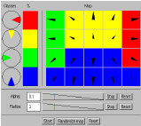

 The four 'pies' shown on the left define the input data classes. The pies generate two-dimensional vectors that lie on the unit circle and whose angles are inside the sector shown in the pie. The relative proportions of the classes in the teaching data can be controlled with the widget on the right of the pies.
On the right is the map. The map units are displayed as arrows pointing to the coordinates in the unit's vector. When teaching is in progress, the map is redisplayed once a second and the background color of the map units are set to correspond to the color of the class the unit's vector is closest to.
Below the map are the control panels to control the alpha and radius parameters. The textfield shows the parameter's initial value. The next indicator shows with the red line where the parameter's value is at the moment relative to the initial and final value. Normally the parameters' values decrease over time when teaching is in progress. The STOP-button can be used to stop or restart the decrease. RESET resets the parameters value to the initial value.
Finally in the bottom is the control panel used to start and stop the teaching, randomize the map and reset the parameters.
All things are editable with the mouse, try them. More detailed information about this demo is also available. But now, let us try the demo: